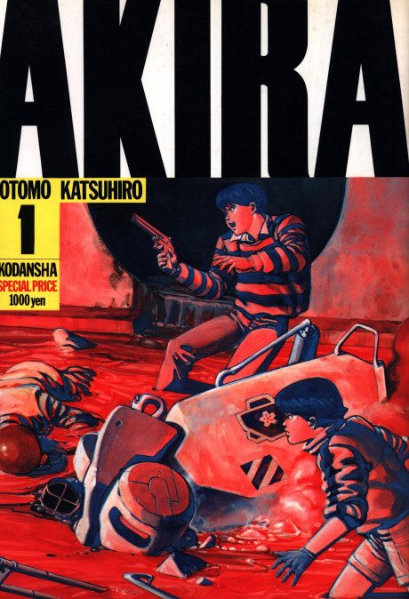
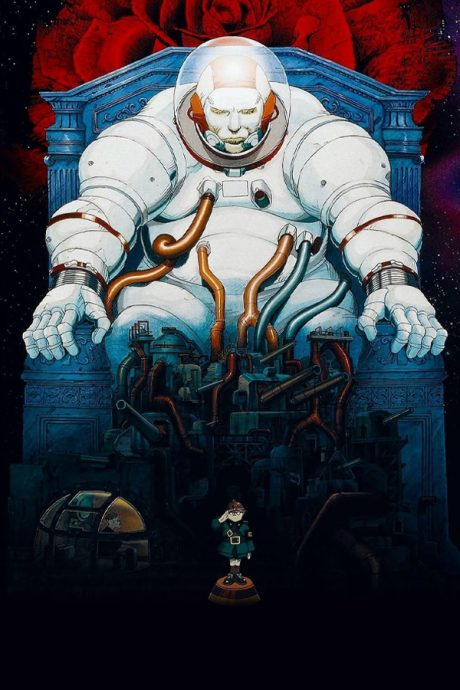

Akira
AKIRA
In a rebuilt Tokyo after World War III, a biker gang member named Tetsuo gains dangerous psychic powers, and his friend Kaneda tries to stop him.
The anime covers the whole manga.
7.9AniList score
—Animeter, no votes yet
1film
Rate it or report where you stopped
Is it worth watching?
The drop map is for series. Rate the film above to add to its Animeter score.
More like Akira
 Original7.4
Original7.4
 Manga Ch. 408.1
Manga Ch. 408.1
 Original7.6
Original7.6
 Original7.7
Original7.7
 Done7.4
Done7.4
 Original7.4
Original7.4
 Manga Ch. 807.9
Manga Ch. 807.9

Film7.6 Done8.8
Done8.8
 Manga Ch. 237.6
Manga Ch. 237.6
 Original6.9
Original6.9
 Original8.5
Original8.5